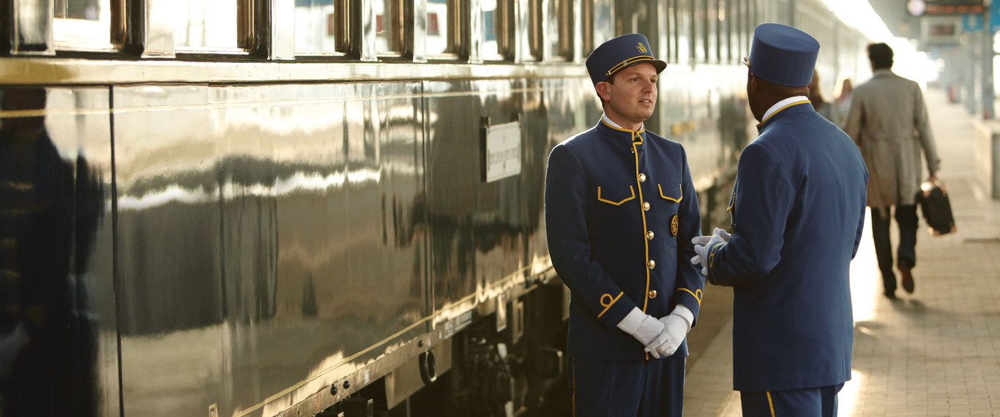
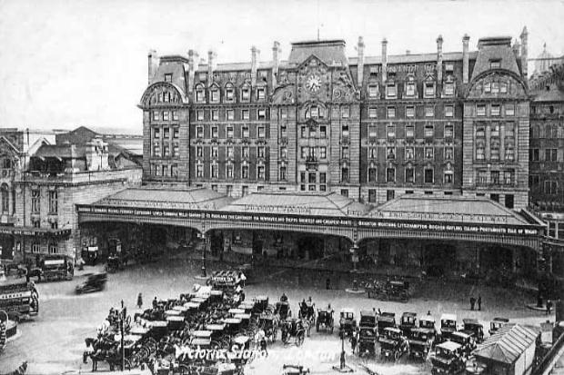
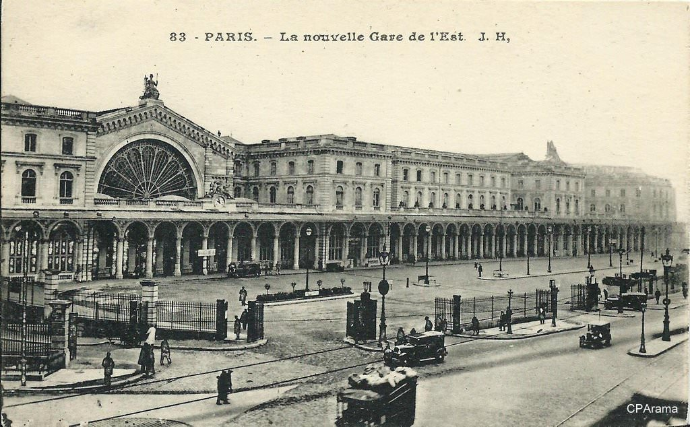
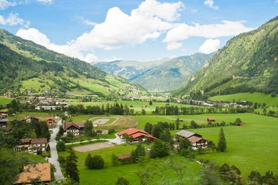
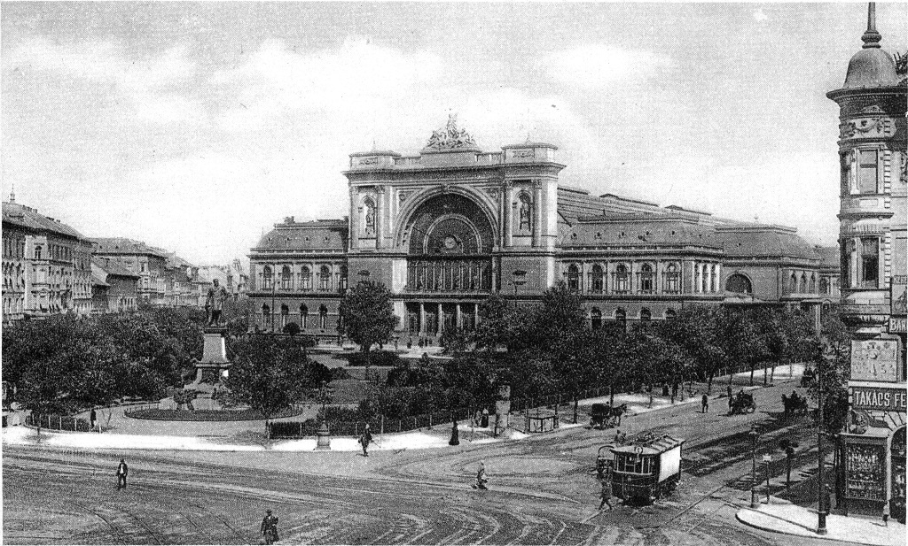
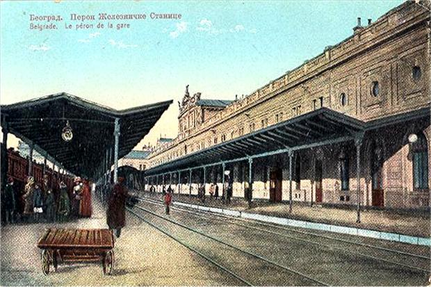
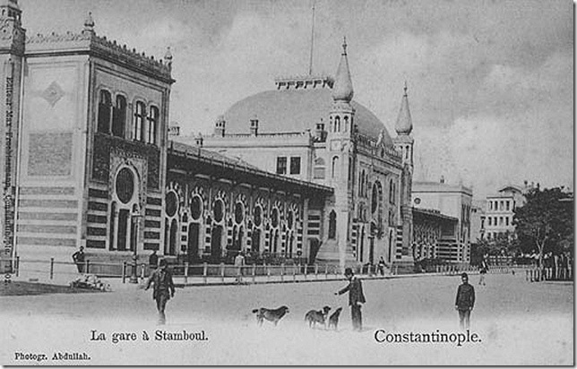

The Orient Express is one of the most historic trains in history. First running in 1883, the Orient Express was the standard for luxurious accommodation during the golden age of travel.
Over the course of its history the train had a variety of routes it took. This story maps takes a few of those routes and their stops, combining them to recreate this magnificent journey.
While the original train no longer runs, one can be retrace the tracks of this famous train today. This storymap serves to show the Orient Express on its way from London to Istanbul.
This journey begins in London at Victoria Station. Here riders would depart for Calais, the first stop on this trip.
London was not part of the original Orient Express in 1883. It was added in the 1930s, the peak of the Orient Express.
Before arriving in Calais, the passenger cars had to be physically loaded onto a ferry that would then take them across the English Channel into France.
Once in Calais, rider would change to sleeper cars before continuing onto Paris, the first major stop.
Rider would arrive at Gare de Paris-Est station in Paris. From here it is a three night trip to Istanbul. Stops in Munich and Vienna before Budapest were added for the additional passenger cars who carried daily riders.
Munich was the first stop after Paris. This was only a quick stop to allow daily passengers to disembark.
To get to Munich, the train has to cross the French Alps through Strasbourg.
Like Munich, Vienna was another quick stop for daily passengers. Between Munich and Vienna the Orient Express would pass through luscious green valleys.
Once in Budapest, more sleepers were added for the rest of the trip to Istanbul. The only major stop before Istanbul was Belgrade. Pictured is Keleti Station, where the Orient Express would stop.
The last major stop before Istanbul was Belgrade. Here the remaining passenger cars were shunted, reattached to other trains headed to other destinations. Only sleeping cars along with the other amenities accompanied the train to Istanbul.
The Orient Express ended its journey in Istanbul, what was know as Constantinople at the time. Here ay Sirkeci Terminal, all passengers departed and other boarded for the return trip to Paris and later London.
The Orient Express continued to ferry to passengers until December of 2009, surpassing 100 year of service. While the train was interrupted multiple times because of World War I and World War II it still found away to exist despite the introduction of the modern airlines. The original direct route no longer exists but it can be recreated on modern routes.
Beyond the rails the Orient Express has become famous for its setting. Agatha Cristies novel 'Murder on the Orient Express' popularized the train into modern culture. The luxury and glamour associated with the Orient Express will see its legacy continued to live on.